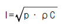
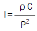
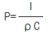
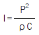
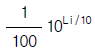
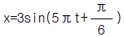
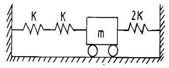
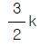
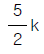

소음진동산업기사 (2002-05-26 기출문제)
1과목: 소음진동개론
1. 음압 P, 소리의 세기(intensity)I, 고유음향 임피이던스 ρ C 사이의 관계식으로 알맞는 것은?(단, ρ 는 대기의 질량밀도, C는 음파의 위상속도)




(정답률: 알수없음)

2. 마스킹 효과에 관한 설명 중 옳지 않는 것은?
- 저음이 고음을 잘 마스킹한다
- 두음의 주파수가 비슷할 때는 마스킹 효과가 대단히 크다
- 음의 반사에 의해 일어난다
- 자동차안의 스테레오 음악에 이용된다
(정답률: 알수없음)
3. 무 지향성 점음원을 세면이 접하는 구석에 위치 시켰을 때 지향지수는?
- 8
- 9
- +8dB
- +9dB
(정답률: 알수없음)
4. 어떤점의 음의 세기레벨이 90[dB]일 때 이 점의 음의 세기는?
- 0.1 [W/m2]
- 0.01 [W/m2]
- 0.001 [W/m2]
- 0.0001 [W/m2]
(정답률: 알수없음)
5. 10℃ 공기중에서 파장이 0.5m 인 음의 주파수는?
- 약 673 [Hz]
- 약 685 [Hz]
- 약 689 [Hz]
- 약 694 [Hz]
(정답률: 알수없음)
6. 공해진동에 관한 내용 중 알맞지 않는 것은?
- 공해진동의 진동수 범위는 1∼90Hz 이다.
- 공해진동은 사람에게 불쾌감을 주며, 사람의 건강 및 건물에 피해를 준다.
- 사람이 느끼는 최소진동치는 55±5dB 이다.
- 공해진동은 수직 및 수평진동이 동시에 가해지면 상쇠현상으로 1/2배의 자각현상이 일어난다.
(정답률: 알수없음)
7. 날개수가 20개인 송풍기가 1200rpm으로 운전될 때 날개통과 주파수는?
- 60Hz
- 400Hz
- 1200Hz
- 24000Hz
(정답률: 알수없음)
8. 점음원에서 어떤 한 방향의 일직선상에 A,B,C 3개의 측정 지점을 설정하였다. 음원에서 거리가 A=100(m),B=500(m), C=1000(m)일 때 AB간과 BC간의 거리감쇠에 관한 설명 중 옳은 것은?
- AB간이 BC간보다 8[dB] 크다.
- AB간이 BC간보다 4[dB] 크다.
- BC간이 AB간보다 4[dB] 크다.
- BC간이 AB간보다 8[dB] 크다.
(정답률: 알수없음)
9. 다음중 맥동하는 기류음을 방출하는 기계는?
- 송풍기
- 터보브로워
- 시로코휀
- 왕복동 압축기
(정답률: 알수없음)
10. NRN 이란?
- 음압평가지수 이다.
- 음의 세기평가지수 이다.
- 소음평가지수 이다.
- 음압레벨평가지수 이다.
(정답률: 알수없음)
11. 소음성 난청에 의해서 장애를 받는 귀의 부분은?
- 외이(外耳)
- 중이(中耳)
- 내이(內耳)
- 대뇌청각역(大腦聽覺域)
(정답률: 알수없음)
12. 진동발생원의 진동을 측정한 결과,가속도진폭이 10-2(m/sec2)이었다. 진동가속도레벨(VAL)로 나타내면(dB)?
- 38
- 42
- 49
- 57
(정답률: 알수없음)
13. 중이(中耳)중의 이소골에 의해 고막의 진폭이 대략 몇배나 증폭되는가?
- 5배
- 20배
- 40배
- 80배
(정답률: 알수없음)
14. 음압레벨이 70dB인 1,000 Hz 순음은 몇 폰(phon)인가?
- 70폰보다 낮다.
- 70폰이다.
- 70폰보다 높다.
- 알수없다.
(정답률: 알수없음)
15. 다음 기술중 ( )안에 들어갈 어귀를 순서대로 바르게 나타낸 것은? [소리가 귀로 들어가서 내이의 감음기에 도달하기 까지의 음파의 전달은 외이에서 고막까지는 ( )전달, 고막에서 전정창 까지는 ( )전달, 내이내에서는 ( )전달을 한다]
- 기체 - 액체 - 고체
- 기체 - 고체 - 액체
- 고체 - 고체 - 액체
- 고체 - 기체 - 액체
(정답률: 알수없음)
16. 인간에 있어서 수직진동을 가장 느끼기 쉬운 주파수(Hz)범위로 옳은 것은?
- 1-2
- 2-4
- 4-8
- 8-16
(정답률: 알수없음)
17. 10℃ 공기중에서 사람의 외이도(外耳道 : 길이 3cm)의 공명 기본음 주파수는?
- 2.8 kHz
- 3.3 kHz
- 3.5 kHz
- 4.0 kHz
(정답률: 알수없음)
18. 인체에 미치는 진동의 영향을 결정하는 물리적 요인으로 적합치 않은 것은?
- 진동의 강도
- 진동 주파수
- 진동의 속도
- 진동의 지속시간
(정답률: 알수없음)
19. 60phon의 소리는 40phon의 소리에 비해 몇 배로 크게 들리는가? (단, sone기준 )
- 2배
- 4배
- 6배
- 8배
(정답률: 알수없음)
20. 음의 세기레벨이 80dB에서 83dB로 증가하면 음의 세기는 몇 % 증가하는가?
- 100 %
- 110 %
- 120 %
- 130 %
(정답률: 알수없음)
2과목: 소음진동 공정시험 기준
21. 등가소음 기록지에서 소음도가 40-45 dB(A)일 때

은 얼마인가?- 0.562× 102
- 0.178× 103
- 0.562× 103
- 0.178× 104
(정답률: 알수없음)
22. 진동레벨계의 성능에 관한 설명으로 알맞지 않은 것은?
- 측정가능 진동레벨 범위는 45-120dB 이상이어야 한다
- 측정가능 주파수 범위는 1-90Hz 이상이어야 한다
- 레벨렌지 변환기가 있는 기기에 있어서 레벨렌지 변환기의 전환오차는 0.5dB 이내이어야 한다.
- 지시계기의 눈금오차는 ± 1.0dB 이내이어야 한다.
(정답률: 알수없음)
23. 디지탈 소음자동분석계를 사용하여 환경소음측정시 샘플 주기는 몇초이내가 되게 하는가?
- 1초 이내
- 5초 이내
- 10초 이내
- 15초 이내
(정답률: 알수없음)
24. 표준음 발생기의 조건중 틀린 것은?
- 음압도와 주파수가 표시되어 있어야 한다
- 발생음의 오차는 ± 1dB이내어야 한다
- 소음계의 부속장비이다
- 고주파음을 발생시키는 장비이다
(정답률: 알수없음)
25. 6차선 도로의 도로변 지역은 도로단으로 부터 몇 m 이내의 지역을 말하는가?
- 30 m
- 60 m
- 90 m
- 120m
(정답률: 알수없음)
26. 자동차 소음 허용기준에 정한 경적음의 측정단위로 옳은 것은?
- dB(A)
- dB(B)
- dB(C)
- dB(D)
(정답률: 알수없음)
27. 소음의 환경기준 측정시 낮시간대에 각 측정지점에서 2시간이상 간격으로 몇회이상 측정해야 하는가?
- 2회
- 4회
- 6회
- 8회
(정답률: 알수없음)
28. 소음계를 손으로 잡고 측정할 경우 소음계를 측정자 몸으로 부터 몇 cm 이상 떨어져야 하는가?
- 10
- 30
- 50
- 70
(정답률: 알수없음)
29. 발파진동의 측정진동레벨에 관한 설명으로 가장 알맞는 것은?
- 하루 시간대중, 최대발파 진동이 예상되는 시각에 1지점 이상의 측정지점수에서 측정하여 측정진동 레벨로 한다.
- 하루 시간대중, 최대발파 진동이 예상되는 시각에 2지점 이상의 측정지점수에서 측정하여 측정진동 레벨로 한다.
- 낮시간대 및 밤시간대의 각 시간대중에서 최대발파 진동이 예상되는 시각에 1지점 이상의 측정지점수에서 측정하여 측정진동레벨로 한다.
- 낮시간대 및 밤시간대의 각 시간대중에서 최대발파 진동이 예상되는 시각에 2지점 이상의 측정지점수에서 측정하여 측정진동레벨로 한다.
(정답률: 알수없음)
30. 환경소음을 상시 측정하고자 할 때 상시측정용 마이크로 폰을 설치할 수 있는 높이의 범위로 알맞는 것은?
- 1.2 - 1.5m
- 1 - 3.5m
- 1.2 - 5m
- 3 - 5m
(정답률: 알수없음)
31. 철도소음측정에 관한 설명으로 틀린 것은?
- 소음계의 청감보정회로는 C특성에 고정하여 측정한다
- 소음계의 동특성은 빠름으로 측정한다.
- 샘플주기를 1초이내로 결정한다.
- 밤시간대는 1회 1시간동안 측정한다.
(정답률: 알수없음)
32. 배출허용기준의 소음 측정 자료평가표에 기재되는 항목과 가장 거리가 먼 것은?
- 측정현황
- 측정기기
- 측정자
- 측정환경
(정답률: 알수없음)
33. 측정소음도와 암소음도의 차가 10 dB(A)이면 보정치는?
- 0
- -1
- -2
- -3
(정답률: 알수없음)
34. 생활소음을 규제할 목적으로 소음계만으로 소음을 측정할 때 소음계 지시치의 변동폭이 5 dB(A) 이내인 경우 어떤 값을 측정소음도로 하는가?
- 규정된 각측정시간 간격별 최대치 10개의 산출평균치
- 규정된 각측정시간 간격별 최소치 10개의 산출평균치
- 변화폭의 중간소음도
- 변화폭의 최대소음도
(정답률: 알수없음)
35. 소음계 성능에 관한 내용중 알맞지 않은 것은?
- 측정가능 주파수 범위는 31.5㎐ - 8㎑이상 이어야 한다.
- 측정가능 소음도 범위는 35㏈ - 130㏈이상이어야 한다.
- 자동차 소음측정에 사용되는 소음계의 측정가능 소음도 범위는 45㏈ - 130㏈ 이상이어야 한다.
- 지시계기의 눈금오차는 0.1㏈ 이내이어야 한다.
(정답률: 알수없음)
36. 진동레벨계의 동특성은 원칙적으로 무엇을 사용하여 측정하여야 하는가?
- 빠름
- 아주빠름
- 느림
- 아주느림
(정답률: 알수없음)
37. 소음계중 지시계기의 성능에 있어서 숫자표시형은 숫자가 소수점 몇 자리까지 표시되어야 하는가?
- 소수점 한자리
- 소수점 두자리
- 소수점 세자리
- 소수점 네자리
(정답률: 알수없음)
38. 어떤 공장의 측정소음도가 65 dB(A)이고, 암소음도는 60dB(A)일때 대상 소음도는 얼마인가?
- 125 dB(A)
- 63 dB(A)
- 62 dB(A)
- 61 dB(A)
(정답률: 알수없음)
39. 소음의 측정조건에 관한 설명으로 알맞지 않은 것은?
- 소음계의 마이크로폰은 주소음원 방향으로 하여야한다.
- 풍속이 초속 5m를 초과할 때는 마이크로폰에 방풍망을 부착하여 측정하여야 한다.
- 소음계의 마이크로폰은 측정위치에 받침장치를 설치하여 측정하는 것을 원칙으로 한다.
- 암소음도는 대상 배출시설의 가동을 중지한 상태에서 측정하여야 한다.
(정답률: 알수없음)
40. 대상배출시설의 진동원을 가능한 최대출력으로 가동시킨 정상 조업상태에서 측정한 진동레벨은 무엇인가? (단, 배출허용기준의 측정시)
- 평가진동레벨
- 대상진동레벨
- 측정진동레벨
- 진동가속도레벨
(정답률: 알수없음)
3과목: 소음진동방지기술
41. 옥외의 자유 공간에 설치된 무지향성 소음원의 음향 파워 레벨이 110㏈이다. 이 소음원으로 부터 20m 떨어진 곳에서의 음압레벨은?
- 73㏈
- 78㏈
- 82㏈
- 86㏈
(정답률: 알수없음)
42.

로 표시되는 조화운동에서 x는 cm, t는 sec, 각도는 radian일 때 고유진동수는?- 2.5 Hz
- 5.5 Hz
- 7.5 Hz
- 9.5 Hz
(정답률: 알수없음)
43. 어느 작업장의 용적이 400m3, 표면적이 200m2, 벽면의 흡음율이 0.20 이면 잔향시간은 얼마인가?
- 약 1.4 초
- 약 1.6 초
- 약 1.8 초
- 약 2.0 초
(정답률: 알수없음)
44. 일반적으로 전파속도가 가장 느린 것은?(단, 재질이 고르고 넓은 경우)
- 종파
- 레이리파
- 횡파
- 소밀파
(정답률: 알수없음)
45. 그림과 같은 진동계의 등가 스프링 상수(Keq)를 옳게 나타낸 것은?

- 4k
- 2k


(정답률: 알수없음)
46. 진동계에서 가진력(Driving Force)의 진동수와 고유 진동수(Natural Frequency)가 일치하면 기대되는 효과는 어떤 것이 있는가?
- 보강간섭
- 공진
- 소멸간섭
- 감쇠
(정답률: 알수없음)
47. 특성 임피던스가 40×106kg/m2sec인 금속관의 프랜지 접속부에 특성 임피던스가 4×104kg/m2sec의 고무를 넣어 제진(진동절연)할 때의 진동감쇠량(dB)은?
- 20
- 24
- 29
- 31
(정답률: 알수없음)
48. 투과율이 0.4이라면 투과손실은 몇 dB인가?
- 2.98
- 3.98
- 4.98
- 5.98
(정답률: 알수없음)
49. 전달률(Transmissibility)이 1이 되는 경우 각 진동수비 γ (=w/wn) 값은 얼마인가?
- √2
- √3
- 2
- 3
(정답률: 알수없음)
50. 소음기에 관한 다음 설명중 옳지 않은 것은?
- 흡음닥트형 소음기는 흡음재료로 유리솜이나 암면등을 사용하면 저.중음역의 감쇠효과를 얻을 수 있다.
- 팽창형 소음기는 닥트단면을 변화 시킨 구조로서 단면 변화부의 다중반사등에 따라 저.중음역의 감쇠 효과를 기대할 수 있다.
- 간섭형 소음기는 음의 통로 구간을 둘로 나누어 각각의 경로차가 반파장에 가깝게 하는 구조이다.
- 공동공명기형 소음기는 헬름홀즈 공명원리를 응용한 것으로 협대역 저주파 소음방지에 탁월하다.
(정답률: 알수없음)
51. 점음원의 출력이 4배가 되고 측정점과 음원과의 거리가 4배가 되면 음압레벨은 어떻게 변하겠는가?
- 3dB 증가한다.
- 3dB 감소한다.
- 6dB 증가한다.
- 6dB 감소한다.
(정답률: 알수없음)
52. 어떤 진동체의 최대 가속도치가 10-1m/sec2이라 할 때 진동 가속도레벨(VAL)은? (단, 기준가속도 진폭은 10-5m/sec2을 사용한다.)
- 65dB
- 77dB
- 82dB
- 88dB
(정답률: 알수없음)
53. 중심주파수가 1,000Hz라면 하단주파수와 상단주파수는 얼마정도 되겠는가?
- 하단주파수 약 710Hz, 상단주파수 약 1,420Hz
- 하단주파수 약 510Hz, 상단주파수 약 1,520Hz
- 하단주파수 약 310Hz, 상단주파수 약 2,120Hz
- 하단주파수 약 810Hz, 상단주파수 약 1,220Hz
(정답률: 알수없음)
54. 송풍기 소음발생원중 1차 고체음 대책으로 가장 적절한 것은?
- 제진 대책
- 소음기 설치
- 차진 대책
- lagging(방음덮개)
(정답률: 알수없음)
55. 다음중 공기스프링의 단점이라 할 수 없는 것은?
- 구조가 복잡하다.
- 공기가 누출될 위험성이 있다.
- 시설비가 많아진다.
- 부하능력이 광범위하지 못하다.
(정답률: 알수없음)
56. 방음벽 높이에 비하여 벽의 길이가 몇 배 이상되어야 적절한가? (단, 점음원인 경우)
- 2배
- 5배
- 8배
- 10배
(정답률: 알수없음)
57. 감쇠자유진동을 하는 진동계에서 감쇠고유진동수가 25Hz, (비감쇠)고유진동수가 30Hz이면 감쇠비는?
- 0.25
- 0.35
- 0.45
- 0.55
(정답률: 알수없음)
58. 실내에서 음원을 측정할때 음원을 끈 순간부터 음압레벨이 60dB(에너지 밀도가 10-6감소) 감쇠되는데 소요되는 시간을 무엇이라 하는가?
- 음향소진시간
- 잔향시간
- 감쇠시간
- 감음시간
(정답률: 알수없음)
59. 상하 각각 0.2mm 를 5Hz로 정현 진동하는 지면의 진동가속도 레벨은 약 몇 dB 인가?
- 74
- 77
- 80
- 83
(정답률: 알수없음)
60. 진동수가 비슷한 두개의 조화운동을 합성할 때 일어나는 현상을 무엇이라고 하는가?
- 울림
- 공진
- 증폭
- 도약
(정답률: 알수없음)
4과목: 소음진동방지기술
61. 소음배출시설(대수기준시설 및 기계,기구)기준으로 적절치 않는 것은?
- 자동제병기
- 제관기계
- 2대이상의 자동포장기
- 20대이상의 직기
(정답률: 알수없음)
62. 야간에 주거지역의 교통소음의 한도(LeqdB(A))는?
- 55
- 58
- 60
- 65
(정답률: 알수없음)
63. 조업중인 공장에서 배출허용기준을 초과배출시 개선에 필요한 개선명령의 기간을 어느 정도 범위에서 정하여야 하는가? (단, 연장기간은 제외한다)
- 3개월
- 6개월
- 1년
- 2년
(정답률: 알수없음)
64. 공항주변 인근지역의 항공기소음의 한도는? (단, 항공기소음영향도(WECPNL)를 기준으로 한다.)
- 70
- 80
- 90
- 100
(정답률: 알수없음)
65. 소음진동규제법에서 사용하는 용어의 정의가 틀린 것은?
- 소음이라 함은 기계· 기구· 시설 기타 물체의 사용으로 인하여 발생되는 강한 소리를 말한다
- 진동이라 함은 기계· 기구· 시설 기타 물체의 사용으로 인하여 발생되는 강한 흔들림을 말한다
- 교통기관이라 함은 기차· 자동차· 항공기· 선박 및 철도등을 말한다
- 방음시설이라 함은 소음,진동배출시설이 아닌 물체로부터 발생하는 소음을 제거하거나 감소시키는 시설로서 환경부령으로 정하는 것을 말한다
(정답률: 알수없음)
66. 환경부장관의 인증을 면제할 수 있는 자동차는?
- 항공기 지상조업용으로 반입하는 자동차
- 외교관이 사용하기 위해 반입하는 자동차
- 여행자등이 다시 반출할 것을 조건으로 일시 반입 하는 자동차
- 외국에서 국내 비영리단체에 무상으로 기증하여 반입 하는 자동차
(정답률: 알수없음)
67. 제작차의 소음배출특성을 참작하기 위한 소음종류와 가장 거리가 먼 것은?
- 경적소음
- 가속주행소음
- 주행소음
- 배기소음
(정답률: 알수없음)
68. 측정망설치계획에 포함되어야 하는 사항으로 알맞지 않는 것은?
- 측정망의 설치시기
- 측정대상 및 범위
- 측정망의 배치도
- 측정소를 설치할 토지 또는 건축물의 위치 및 면적
(정답률: 알수없음)
69. 과태료 처분에 불복이 있는 자는 그 처분의 고지를 받은 날부터 몇일이내에 이의를 제기할 수 있는가?
- 10일
- 15일
- 20일
- 30일
(정답률: 알수없음)
70. 2002년 1월 1일 이후 제작되는 경자동차 배기소음은 몇 dB(A) 이하여야 하는가?
- 95
- 100
- 1⑤
- 110
(정답률: 알수없음)
71. [(①)은(는) 항공기소음이 (②)이 정하는 항공기 소음의 한도를 초과하여 공항주변의 생활환경이 매우 손상된다고 인정하는 경우에는 관계기관의 장에게 방음시설의 설치를 위하여 필요한 조치를 (③)할 수 있다.] ( )안에 들어갈 내용으로 알맞는 것은?
- ①시· 도지사 ②환경부령 ③요청
- ①시· 도지사 ②환경부령 ③권고
- ①환경부장관 ②대통령령 ③요청
- ①환경부장관 ②대통령령 ③권고
(정답률: 알수없음)
72. 환경부장관은 필요하다고 인정하는 때에는 다음 항목의 자에 대하여 보고를 명하거나 자료를 제출하게 할 수 있는바 이에 해당되지 않는 자는?
- 배출시설의 설치 또는 변경에 대한 신고를 하거나 허가를 받은 자
- 운행차의 개선결과 확인업무를 행하고자 시,도지사에게 등록한 자
- 폭약을 사용하는 자
- 소음진동방지시설 설치업을 행하고자 등록한 자
(정답률: 알수없음)
73. 공장소음 배출허용기준에서 소음의 보정치가 틀린 것은?(단, 평가 소음도 50dB(A)기준, 단위:dB(A) )
- 충격음 성분이 있을 경우 : +5
- 낮 06 : 00 ∼ 18 : 00의 시간대 : +5
- 도시지역의 상업지역, 준공업지역 : -15
- 밤 24: 00 ∼ 익일 06 : 00의 시간대 : +10
(정답률: 알수없음)
74. 시· 도지사는 배출시설에 대한 배출허용기준에 적합한지 여부를 확인하기 위하여 필요한 경우 가동상태를 점검할 수 있으며 이를 검사기관으로 하여금 소음· 진동검사를 하도록 지시할 수 있는바, 이를 검사할 수 있는 기관으로 거리가 먼 것은?
- 환경관리공단
- 시,도보건환경연구원
- 지방환경관리청
- 환경보전협회
(정답률: 알수없음)
75. 환경관리인의 교육기관으로 적절한 곳은?
- 환경공무원교육원
- 환경관리공단
- 국립환경연구원
- 환경보전협회
(정답률: 알수없음)
76. 경음기를 추가로 부착한 자동차 소유자에게 부과되는 처분으로 적절한 것은?
- 30만원이하의 과태료
- 50만원이하의 과태료
- 100만원이하의 과태료
- 100만원이하의 벌금
(정답률: 알수없음)
77. [ ( )가 측정망설치계획을 결정,고시하고자 하는 경우에는 그 설치위치등에 관하여 미리 관할 환경관리청장의 의견을 들어야 한다 ] ( )안에 알맞는 내용은?
- 시,도지사
- 환경부장관
- 구청장, 군수
- 행정자치부장관
(정답률: 알수없음)
78. 다음중 배출시설의 설치허가를 받으려고 할 때 제출해야 하지만 신고의 경우에 제외되는 서류는?
- 방지시설의 설치내역서
- 배출시설의 설치내역서
- 배출시설의 배치도
- 방지시설의 도면
(정답률: 알수없음)
79. 운행차의 개선명령기간으로 적절한 것은?
- 개선명령일로 부터 3일
- 개선명령일로 부터 5일
- 개선명령일로 부터 7일
- 개선명령일로 부터 10일
(정답률: 알수없음)
80. 배출시설 설치허가 대상에서 제외되는 지역에 해당되지 아니한 것은?
- 산업입지 및 개발에 관한 법률 규정에 의한 산업단지
- 도시계획법 시행령 규정에 의하여 지정된 전용공업 지역
- 도시계획법 규정에 의하여 지정된 상업전용지역
- 수출자유지역 설치법 규정에 의하여 지정된 수출자유 지역
(정답률: 알수없음)